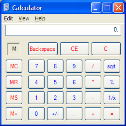
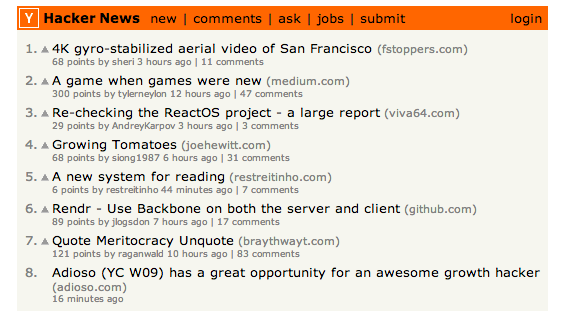
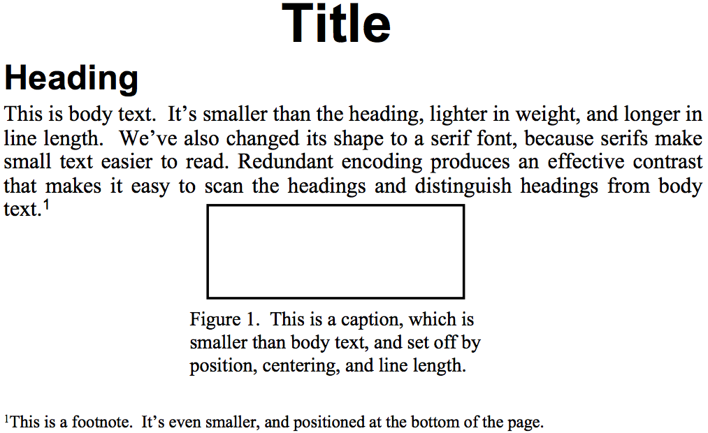
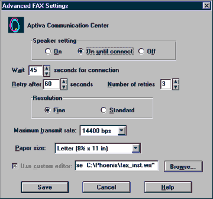
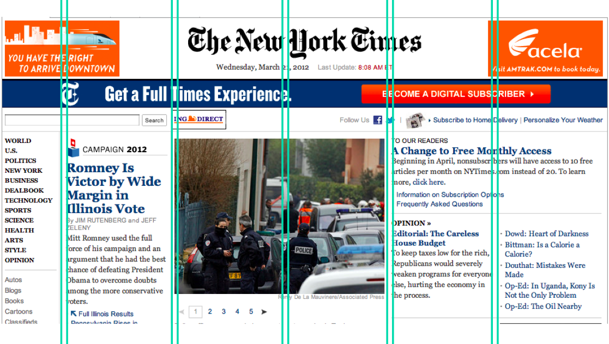
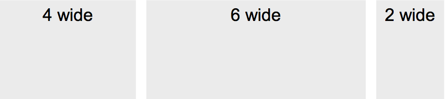

Grouping and Hierarchy
The Gestalt Principles of Grouping
- Gestalt principles explain how the eye creates a whole (_gestalt_) from parts

The power of white space for grouping derives from the Gestalt principle of proximity. These principles, discovered in the 1920's by the Gestalt school of psychologists, describe how early visual processing groups elements in the visual field into larger wholes. Here are the six principles identified by the Gestalt psychologists:
1. **Proximity**. Elements that are closer to each other are more likely to be grouped together. You see four vertical columns of circles, because the circles are closer vertically than they are horizontally.
2. **Similarity**. Elements with similar attributes are more likely to be grouped. You see four *rows* of circles in the example, because the circles are more alike horizontally than they are vertically.
3. **Continuity**. The eye expects to see a contour as a continuous object. You primarily perceive the Continuity example above as two crossing lines, rather than as four lines meeting at a point, or two right angles sharing a vertex.
4. **Closure**. The eye tends to perceive complete, closed figures, even when lines are missing. We see a triangle in the center of the example, even though its edges aren't complete.
5. **Area**. When two elements overlap, the smaller one will be interpreted as a figure in front of the larger ground. So we tend to perceive the example as a small square in front of a large square, rather than a large square with a hole cut in it.
6. **Symmetry**. The eye prefers explanations with greater symmetry. So the example is perceived as two overlapping squares, rather than three separate polygons.
A good paper about perceptual grouping in HCI and information visualization is Rosenholtz et al, "[An Intuitive Model of Perceptual Grouping for HCI Design](http://web.mit.edu/rruth/www/Papers/RosenholtzEtAlCHI2009PO.pdf)", CHI 2009.
Grouping
- Use Gestalt principles to visually group related items

The Gestalt principles - particularly *similarity* and *proximity* - are useful for putting structure on a visual display, helping the viewer chunk it. The calculator shown here (which we've criticized for other reasons, but we'll praise it now) uses both similarity and proximity to group what might otherwise be a grid of identical-looking buttons into functional units. The MC/MR/MS/M+ buttons all share the same label color, shape, size, and even the prefix "M" (similarity), and furthermore each button is closer to the other M buttons than it is to the rest of the calculator (proximity). The effect is to group the M buttons strongly together into a memory function. Similarity is likewise used to group Backspace/CE/C together, to group the central number pad together, and to group the key operators /, *, -, + together.
Hierarchy
- Establish a hierarchy of importance among items in the design


Establish a hierarchy of importance among the elements of your design. One kind of hierarchy is visual: use visual variables to make the more important elements pop out. Hacker News (top) does this effectively and simply. The highest element in the hierarchy is the header bar, which pops out because of its position, its drastically contrasting hue (the only non grayscale on the page!), and value (the boldfaced title in it). The next elements in the hierarchy are the items on the list. Within each item, the most important element is the article title, which pops out. Other data fields of the article have less importance, so they are given less salience.
Article formats (like the one shown on the bottom) also demonstrate hierarchy. Here, not only are visual variables used to put some elements (like the title) at a higher level than others (like body text), but the *position* of the elements is also important. More important elements appear first in the order that the display is likely to be scanned by the reader. In this case that order is top-to-bottom, left-to-right, but be aware that your design can *change* the scanning order. For a newspaper with a big banner headline or a central "hero" image, the viewer's eyes will start there.
Alignment and Grids
Alignment
- Align labels on left or right
- Align controls on left *and* right
- Align text baselines

Finally, simplify your designs by aligning elements horizontally and vertically. Alignment contributes to the simplicity of a design. Fewer alignment positions means a simpler design. The dialog box shown has totally haphazard alignment, which makes it seem more complicated than it really is.
**Labels** (e.g., "Wait" and "Retry after"). There are two schools of thought about label alignment: one school says that the left edges of labels should be aligned, and the other school says that their right edges (i.e., the colon following each label) should be aligned. Both approaches work, and experimental studies haven't found any significant differences between them. Both approaches also fail when long labels and short labels are used in the same display. You'll get best results if you can make all your labels about the same size, or else break long labels into multiple lines.
**Controls** (e.g., text fields, combo boxes, checkboxes). A column of controls should be aligned on both the left and the right. Sometimes this seems unreasonable---should a short date field be expanded to the same length as a filename? It doesn't hurt the date to be larger than necessary, except perhaps for reducing its perceived affordance for receiving a date. You can also solve these kinds of problems by rearranging the display, moving the date elsewhere, although be careful of disrupting your design's functional grouping or the expectations of your user.
So far we've only discussed left-to-right alignment. Vertically, you should ensure that labels and controls on the same row share the same **text baseline**. Java Swing components are designed so that text baselines are aligned if the components are centered vertically with respect to each other, but not if the components' tops or bottoms are aligned. Java AWT components are virtually impossible to align on their baselines. The dialog shown here has baseline alignment problems, particularly among the controls in the last row: the checkbox "Use custom editor", the text field, and the Browse button.
Grid-Based Design

A **grid** is one effective way to achieve both alignment and balance, nearly automatically. A grid means that you divide the user interface into equal-width columns (separated by gaps, and with margins on both sides of the window), and align content and controls on the column boundaries. Some elements may span multiple columns, but they align (start or end at) column boundaries.
Newspapers are famous for designing with grids, but if you look carefully at magazines, posters, and many other print designs, you'll often see a grid guiding the design.
Responsive Design
A discussion of layout would not be complete without talking a bit about responsive design, which means a layout design that responds appropriately to the size and aspect ratio of the screen. Responsive designs don't merely rescale when shown on a small phone screen or on a widescreen desktop monitor. Instead, a responsive design rearranges its layout, possibly changing what was a 12-column grid on a big wide screen into a 3-column grid on a narrow small screen. Responsive design is implemented with CSS **media queries** that select different CSS rules depending on the kind of device, its screen size and resolution, and its aspect ratio. Twitter Bootstrap has responsive design features.
Bootstrap

<div class="container">
<div class="row">
<div class="col-md-4">4 wide</div>
<div class="col-md-6">6 wide</div>
<div class="col-md-2">2 wide</div>
</div>
</div>
Bootstrap is a nice Javascript/CSS toolkit that has a very simple-to-use grid system that also supports responsive layout.
Bootstrap’s grid has 12 columns with identical widths. You structure your views in a tree, and add the CSS class “row” to combine views into a row, and “col-WW-N” to indicate that a view should span N columns of the grid when viewed in a window of width at least WW. The window widths are `xs` (extra small, i.e., phones), `sm` (small, tablets), `md` (medium, laptops), and `lg` (large, big screen). These discrete window widths are how Bootstrap implements responsive design.
Try out Bootstrap by [installing it](http://getbootstrap.com/getting-started/) and [learning about the grid system](http://getbootstrap.com/examples/grid/).
Answer this question: [Layout](https://docs.google.com/forms/d/e/1FAIpQLScQLWoxnHrn9mO74M0ouO3bXzWSdmjLTqXtzY4a2Bw2k4iCqg/viewform?usp=sf_link)